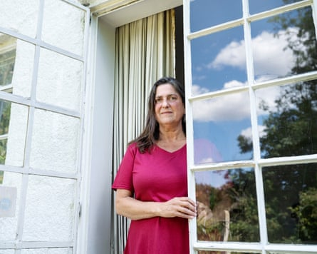

In the city of Bhubaneswar, the capital of the north-east Indian state of Odisha, there is an eye clinic that has transformed the lives of thousands of children.
Before the unit was established in 2008, according to its vice-chair, there was no dedicated children’s eye care centre in the entire eastern part of India, a country home to 20% of the world’s blind children . The clinic now sees about 3,000 children a month and performs 350 eye surgeries – a significant proportion of them at no cost to the often very poor families who need them.
Miriam Hyman.Photograph: Rex Features
This is one of the legacies of Miriam Hyman , a 31-year-old picture researcher, amateur artist and keen dancer who was murdered in the London bombings of 7 July 2005, alongside 51 other commuters.
Miriam was “a very visual person”, says her older sister Esther, and after her death, her family were determined that good would come from the terrible act of violence that claimed her life. With their compensation money and public donations, they funded the equipment needed to set up the Miriam Hyman Children’s Eye Care Centre in Bhubaneswar. Thanks to its work, among other achievements, doctors have made significant steps towards eliminating one form of childhood blindness, retinopathy of prematurity , in the surrounding area.
Esther Hyman: ‘We’ve done everything we can … so there is a sense of satisfaction.’Photograph: Linda Nylind/The Guardian
“It makes our hearts happy to know that she’s memorialised in that way,” says Esther Hyman. “The centre is Miriam’s living memorial. It’s a place that benefits people, and that’s very much the kind of person that Miriam was.”
Twenty years after the attacks, the families of those who died are preparing to gather on Monday to mourn and remember those killed in the four suicide bombings on 7/7, three on London Underground trains and the fourth on a doubledecker bus.
Fiona Stevenson.Photograph: Stevenson family
Alongside their profound sadness, however, many family members will also be able to point to acts of great positivity and hopefulness, large and small, that followed their loved ones’ deaths.
Among these little rays of light, scattered around the world, is a project in Belize that has taught thousands of children to swim. It was set up after 7/7 by the family of Fiona Stevenson , a solicitor originally from Cheshire who was killed in the explosion at Aldgate.
Described by her family as a whirlwind of positivity and enthusiasm who loved to travel, Stevenson had recently returned from a working trip to the Central American country, where she had proudly gained her diving qualifications, but had also learned that many children in the country died by drowning because few had the chance to learn to swim.
The charity was set up “to try and find some positivity out of such a horrendous time for us”, says her sister Andrea Watson. “It gave us something to focus on, and we remembered how much Fiona loved Belize when she was there working. Although the break in our hearts will never be mended, it brought some comfort that those that gained a skill for life were gaining it in her name.”
The scheme has also trained hundreds of young adults as lifeguards and swim instructors. By the side of a swimming pool in Belize City is a plaque and photo explaining more about the life of the woman whose quiet legacy may have been to prevent countless child deaths.
On the other side of the world, meanwhile, a fund set up in memory of Michael Matsushita , who died at Russell Square, distributed funds between five children’s orphanages in Cambodia and Vietnam. Matsushita, a New Yorker, was born in Vietnam and had recently moved to London to join his girlfriend, who, like him, worked as a tour guide for the firm Intrepid Travel.
Other memorial projects are closer to home. On the day of the attacks, Great Ormond Street children’s hospital treated adult casualties for the first time since the second world war; only later did those at the hospital learn that two of their own staff – Behnaz Mozakka , a biomedical officer, and Mala Trivadi , a radiographer – were among the dead. They are now remembered in a garden at the hospital where staff can find refuge from their busy shifts and long-term patients experience fresh air and tranquility.
A substantial donation from the family and employers of Helen Jones , an accountant originally from Lockerbie, helped fund the opening of a children’s unit at the Eden Valley hospice in Cumbria, which has since supported the families of many hundreds of sick babies and children. In memory of Benedetta Ciaccia , an Italian-born business analyst who worked in publishing, Birkbeck, University of London awards annual bursaries to students studying IT, the course from which Ciaccia had recently graduated.
Benedetta Ciacci.Photograph: PA
For all the manifest good these memorial projects do, they have not come without cost for family members who have been dealing with intensely personal losses. The first decade after Miriam’s death was “very effortful”, says Esther Hyman, in establishing both the eye clinic and an educational resource , called Miriam’s Vision , to help teachers explore issues of reconciliation.
“I now realise that in the first 10 years, I wasn’t dealing with my emotions, I was suppressing my grief by channelling it into constructive efforts,” she says. After that milestone, she felt burnt out and had to step back for a while, spending several years overseas. “I couldn’t live the rest of my life in light of my sister’s death. I had to find other channels, other ways of being that didn’t concern Mim’s death.”
With the government reviewing the national curriculum, Esther and her mother, Mavis, are focused on campaigning to have the topic of social cohesion explicitly included. “It’s a pity that it falls to those who’ve been affected by a lack of social cohesion to speak up for social cohesion, but I think it’s understandable. We don’t want anybody else to go through what we’ve been through,” she says.
Once that review ends, and with the clinic well established, they may reluctantly conclude that it is time to wind down the Miriam Hyman Memorial Trust “with regret, and maybe with some relief”, says Esther. “We’ve done everything we can within our arms’ reach. So there is a sense of satisfaction.”
Other schemes continue, however. The family and employers of Philip Russell , 28, a financial manager who died in the bus bombing, funded a travel bursary in his memory at Kingston University, intended to enable students to make a difference in projects overseas.
Gabriel Oyewole at a project for young footballers in Ghana after receiving a travel bursary in memory of Philip Russell.Photograph: Gabriel Oyewole
Gabriel Oyewole recently used a bursary to travel to Ghana where he worked as a mentor to students and developed his skills as a physiotherapist. The Russell family, he says, “could have put the money into anything they wanted to, probably easier ventures, but they chose to help students that needed help, career-wise and personally. They probably changed, not just mine, but probably a lot of people’s careers and personal life in doing that.”
Philip’s father, Grahame , who, with Philip’s mother, Veronica, sat on the committee that awarded the grants, died recently. “He was very proud to serve on that board for 20 years,” says Philip’s sister Caroline Steadman. She will now take his place on the panel, continuing to support young people who are looking forward excitedly to their futures, just as her brother was two decades ago.